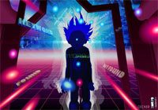

decker
Fichiers conservés de la collection Metaflash.
Ouvrir l’imageFichiers conservés
images/decker.jpg

Informations du fichier
- Nom conservé
- b64e7be0501addde89aa76b9ad4ceaab8f8adf487a62b410f73150cb690f6bab.jpg
- Taille
- 12,496 octets
- SHA-256
- b64e7be0501addde89aa76b9ad4ceaab8f8adf487a62b410f73150cb690f6bab
Provenance dans la sauvegarde Metaflash :
- images/decker.jpg (b64e7be0501addde89aa76b9ad4ceaab8f8adf487a62b410f73150cb690f6bab)
images/decker4.jpg


Informations du fichier
- Nom conservé
- c47fb6c03b5cfd8a3f465395f99448491761ad4ce0ef63f2036c58bb4b7f8ecc.jpg
- Taille
- 11,260 octets
- SHA-256
- c47fb6c03b5cfd8a3f465395f99448491761ad4ce0ef63f2036c58bb4b7f8ecc
Provenance dans la sauvegarde Metaflash :
- images/decker4.jpg (c47fb6c03b5cfd8a3f465395f99448491761ad4ce0ef63f2036c58bb4b7f8ecc)
images/decker5.jpg

Informations du fichier
- Nom conservé
- ba35bae5f497c160381f87ab46caf574ee7a88b0075bc8c2ab686e58680b9c06.jpg
- Taille
- 11,360 octets
- SHA-256
- ba35bae5f497c160381f87ab46caf574ee7a88b0075bc8c2ab686e58680b9c06
Provenance dans la sauvegarde Metaflash :
- images/decker5.jpg (ba35bae5f497c160381f87ab46caf574ee7a88b0075bc8c2ab686e58680b9c06)